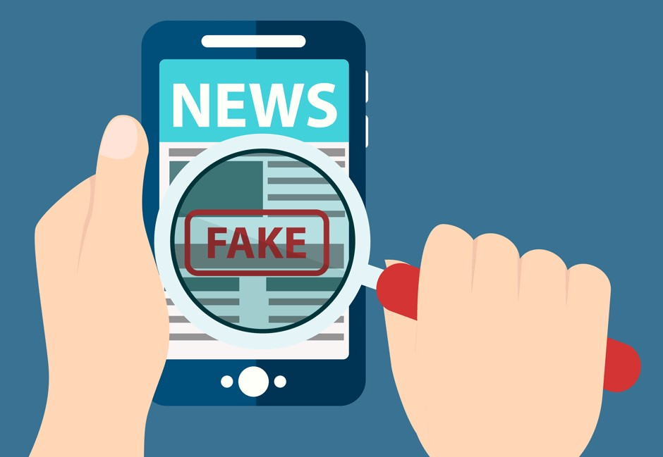

El uso responsable de las TIC implica el uso ético y consciente de estas tecnologías para evitar daños a uno mismo y a los demás. Aquí hay algunas pautas clave para fomentar el uso responsable de las TIC:
Respeto a la privacidad: Respetar la privacidad de los demás es fundamental. No debemos divulgar información confidencial o imágenes de otras personas sin su consentimiento. Además, debemos tener cuidado al compartir información personal en línea y ajustar la configuración de privacidad en las redes sociales.
Seguridad en línea: La seguridad en línea es esencial para protegerse contra virus, malware y ataques cibernéticos. Mantener contraseñas seguras, actualizar software y utilizar antivirus son pasos clave para garantizar la seguridad en línea.
Comunicación respetuosa: La comunicación en línea debe ser respetuosa y considerada. Evitar el acoso, la difamación y el ciberbullying es esencial. Tratar a los demás en línea de la misma manera que lo haríamos en persona es una regla básica de cortesía.

Veracidad de la información: Compartir información precisa y verificada es un principio importante del uso responsable de las TIC. La desinformación y las noticias falsas pueden tener consecuencias perjudiciales.

Gestión del tiempo: El uso excesivo de las TIC puede afectar negativamente la productividad y la salud. Es importante establecer límites en el tiempo dedicado a las pantallas y equilibrarlo con actividades fuera de línea.
Derechos de autor y propiedad intelectual: Respetar los derechos de autor y la propiedad intelectual es esencial al compartir contenido en línea. Evitar la piratería y el uso no autorizado de material protegido por derechos de autor es un deber ético. Dada cuatro o cinco años, se irá duplicando en número.